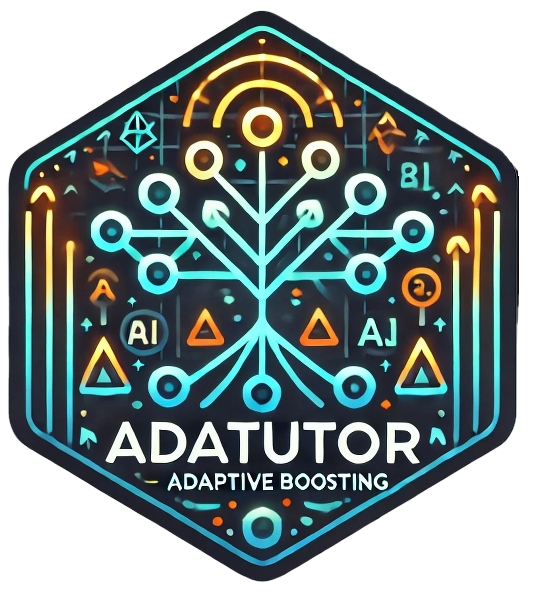

adatutor – Introducing Psychologists to Boosting with AdaBoost in R

Description
The adatutor package supports our efforts to introduce boosting to psychologists with little or no machine learning background. It provides the necessary dataset and convenience functions used in our hands-on tutorial.
Installation
The adatutor package is not (yet) available on CRAN. To install it from within R, use something like the following: